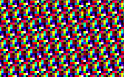
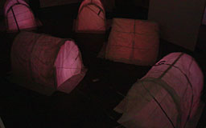

Selected Work
Peoplpe Staring at Computers
2011
A photographic intervention. Custom app installed around NYC, taking a picture every minute and uploading it if a face is found in the image. Exhibited on site with a remotely triggered app that displayed the photos full screen on every available computer.
Only Everything Lasts Forever
2008-2010
Very long sound composition for MP3: an arrangement of every sound we can uniqely distinguish. An exploration of noise and emptiness, and the auditory implications of sound representation. An open source project towards an MFA.

...and Counting
2010, for Wafaa Bilal
Visualization for a full-back tattoo, one dot for each death associated with the war in Iraq: 4k US soldiers in red ink, 100k "invisible" civilians in ultraviolet.
Lagoglyphs
2010, with Shawn Lawson for Eduardo Kac
Flocking of 1400 unique handmade drawings, with an emphasis on the generative mutability of writing. A version of the source was branched, and shared as "Clouds are Looming".

Night Lights
2009
Building projection with crowd interaction in collaboration with
YesYesNo, featuring three different interaction modes over six different scenes, cycled every hour over five nights in Auckland, NZ.

keytweeter
2009
One-year performance for custom keylogger, tweeting every 140 characters I type, ending June 30, 2010. An exploration of the boundary between "information" and "control", ubiquitous status updates, and personal identity.
Portrait Machine
2009, with Theo Watson
An interactive photography installation that visualizes the connections between visitors, reminding us of our connectedness and uniqueness, creating strong visual patterns and playful juxtapositions.

DIY 3D Scanning
2009-
Ongoing work democratizing realtime 3D scanning with structured light (one projector, one camera).

1¢ Grants
2009
A project to provide 100 grants at 1¢ cent each. Suspended early due to the high overhead cost of mailing pennies.
Vibrobyte
2008-2009
The Vibrobyte is a wireless haptic interface specialized for co-located musical performance. It was featured in "Telemorphosis" at
ICMC 2008. Technical details were presented at the
156th ASA Meeting and
NIME 2009.

I Eat Beats
2008-2009
Skittle-based beat sequencer, a tangible and edible music interface. v2 implements a generic control surface with the aide of a linear polarizer to cancel out the screen.

pppd
2009
An appropriation of computability theory. During each brief scene, a random sequence of p'' code is generated and run, while the memory it uses is visualized and sonified. An investigation of emergent behavior and computational dreams.

Please Remember Me When I'm Gone
2008, with Rebecca Weisman
Exploration of personality, death, and emptiness through a human-scale settlement of handmade dwellings combining video, electronics, and recorded voice. Colors from the sky as it moves from dusk to dark, and from dark to dawn, are sampled from video and routed into the huts.
Nandhopper
2008-
Ongoing noise synth explorations, with inspiration from the Kraakdoos, Theremin, Thingamakit, and BEAM electronics.
DIY 3D Interface
2008-
Ongoing work with DIY capacitive sensing for 3D interaction. v1 used an Arduino, aluminum foil, and six resistors.

Future Fragments
2008
An anti-time-capsule: quotes from seven fellow art students, transcribed phonetically and encoded as colors. Prints of these colors were carried by the artists for a summer. Decoded back into phonemes and re-formed into words, each text offers an indirect account of their respective journeys.

Musique Du Vent
2008
Reclaiming the entropy of unused dryer heat from a vent outside a freshman dorm, redirecting it into a discarded accordion. During the early Winter, the vent creates a small grassy space surrounded by snow. In March, it's mostly thick mud, but still unexpectedly warm and inviting.
Theremug
2007
An exercise in simplicity: the most basic capacitive sensor, using the smallest possible number of external components. Requires only an unshielded cable connected to a microphone input.

Empathy
2004
Early Processing work. Don't move too fast, you might scare it. Click to forgive and forget.
Bio
Kyle McDonald
works with sounds and codes, exploring translation, contextualization, and similarity. With a background in philosophy and computer science, he strives to integrate intricate processes and structures with accessible, playful realizations that often have a do-it-yourself, open-source aesthetic.